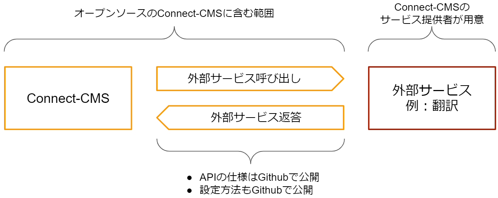

外部サービス - 外部サービス
外部サービスとは、Connect-CMSから呼び出すAPIサービスです。
翻訳やPDFサムネイル自動生成、AI顔認識などは、Connect-CMSとしては、呼び出しを行うユーザインタフェースのみを提供し、実際の処理は別のサービスを使用していただくものです。
APIの仕様は公開しているため、個人が自作することも、会社等が提供しているサービスを使用することも可能です。
WYSIWYGエディタの「翻訳」、「PDFアップロード」、「AI顔認識」は外部サービスです。
以下に外部サービスのイメージを示します。
【Connect-CMSと外部サービス】

以下に外部サービスの詳細を説明します。
外部サービスとは
- 「外部サービス」とは、Connect-CMS 本体には、その機能を持たず、サービス提供会社の方で実装（実現）する機能を指します。
- 例えば、WYSIWYG の「翻訳」機能や「PDFアップロード」、「AI顔認識」機能が外部サービスにあたります。
- 「翻訳」機能や「PDFアップロード・画像変換」機能は、呼び出す側のユーザーインターフェースはConnect-CMS 本体に含んでいます。
- サービス提供会社側で、各外部サービスの実装を行う必要があります。
外部サービスのインターフェース
- 各外部サービスのインターフェースは、Connect-CMS のGithub - Wiki で公開しています。
- https://github.com/opensource-workshop/connect-cms/wiki/API
外部サービスの有効化
- 外部サービスが用意できたら、機能を有効に設定する必要があります。
- 外部サービスの有効設定はマニュアルの「管理者 - 外部サービス設定 - WYSIWYG設定」を参照してください。
- 外部サービス設定 - WYSIWYG設定
外部サービスが使えるサービス
- 外部サービスが使えるサービスはConnect-CMS公式サイトの以下のページで公開します。
- Connect-CMS サービス紹介